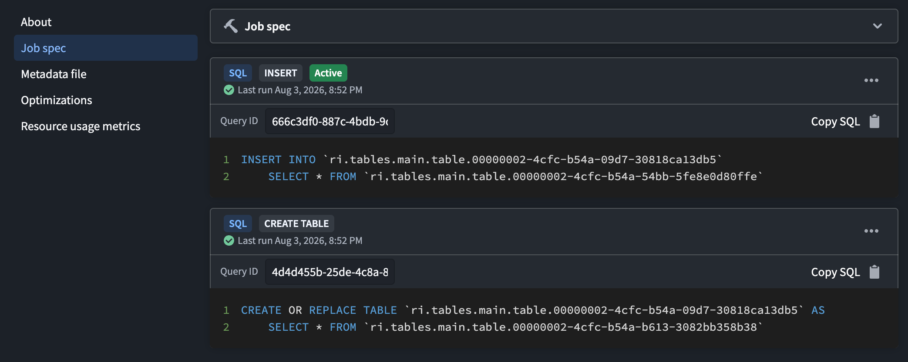
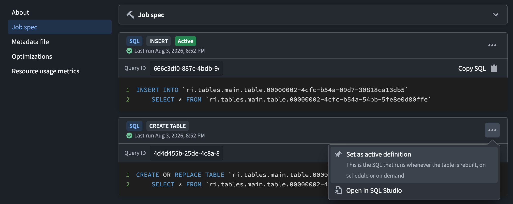

Unlike other Foundry compute workflows, Furnace SQL allows a tabular output to retain multiple SQL definitions. A definition contains either a single write query or multiple statements in a transaction block. One definition is marked Active.
The active definition is the SQL that runs whenever the table is rebuilt, either on schedule or on demand. Selecting a different active definition changes future rebuilds but does not immediately run the definition.
To view the definitions associated with an output:
Each definition displays its SQL operation type, last run, query ID, and SQL. The active definition is identified by the Active label.

From a definition's options menu, you can:

Running a write query creates a definition for each output. The first definition for an output becomes active. Except for CREATE OR REPLACE TABLE, each subsequent write retains the existing definitions, adds a definition, and makes the new definition active unless you use the adhoc hint. A CREATE OR REPLACE TABLE query replaces the existing definitions for the recreated output.
Use the adhoc SQL hint to run a one-time write and retain it as an additional definition without changing the active definition.
Consider an Iceberg table at /Sales/Orders that receives new orders from a daily input. Its active definition appends the latest rows whenever the table is built on schedule or on demand:
INSERT INTO `/Sales/Orders`
SELECT order_id, customer_id, order_date, total
FROM `/Sources/Orders daily`;
Suppose you later discover a historical input containing orders that are missing from the output. Run the backfill as an ad hoc definition:
/*+ adhoc */
INSERT INTO `/Sales/Orders`
SELECT order_id, customer_id, order_date, total
FROM `/Sources/Orders history`
WHERE order_date < DATE '2026-01-01';
The historical rows are appended immediately, and the backfill SQL is retained as an additional definition. The daily query remains active, so subsequent scheduled and on-demand builds continue to append from /Sources/Orders daily.
Consider an Iceberg table at /Manufacturing/Sensor readings that receives hourly sensor data. Its active definition is:
INSERT INTO `/Manufacturing/Sensor readings`
SELECT recorded_at, sensor_id, reading
FROM `/Sources/Sensor readings hourly`;
To use zstd compression for data files written in the future, run the property change as an ad hoc definition:
/*+ adhoc */
ALTER TABLE `/Manufacturing/Sensor readings`
SET TBLPROPERTIES (
'write.parquet.compression-codec' = 'zstd'
);
The property is updated once without making the ALTER TABLE statement active. Existing data files are unchanged, while data files produced by later runs of the active definition use zstd compression.
Data Lineage reflects the inputs referenced by all retained SQL definitions, including inactive and ad hoc definitions. As a result, an input can appear in lineage even when it is not referenced by the active definition.